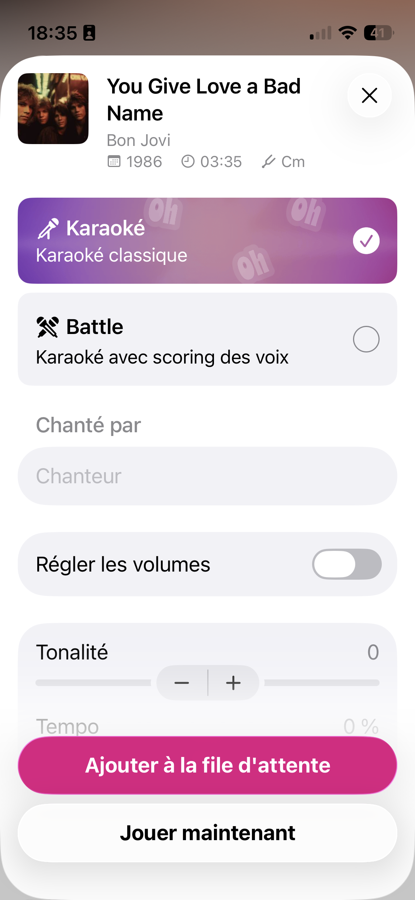

Leçon 2 · La fiche chanson
Un formulaire complet : choix exclusif entre deux options, champ texte, toggle, deux sliders — et l'outil qui va changer ta façon d'itérer sur du SwiftUI : les Previews.
#Preview), l'outil que tu utiliseras à chaque ligne de SwiftUI que tu écriras désormais.

#Preview — arrête de lancer le simulateur à chaque changementTu as vu en théorie que les macros Swift (comme @Observable) remplacent du code généré à la compilation. #Preview en est un exemple très concret : c'est une macro qui affiche ta vue dans le canvas d'Xcode, à côté de ton code, sans lancer l'app dans le simulateur. Modifie ton code, le canvas se met à jour quasi instantanément.
#Preview {
SongOptionsSheet(song: .init(
title: "You Give Love a Bad Name",
artist: "Bon Jovi",
year: 1986,
duration: "03:35",
key: "Cm"
))
}Colle ce bloc à la fin du fichier qui contient SongOptionsSheet (plus bas). Ouvre le canvas avec Cmd+Option+Return si Xcode ne l'affiche pas déjà. C'est l'équivalent le plus proche du "aperçu à chaud" que tu connais peut-être d'un design system web, mais compilé et natif — Interface Builder n'offrait rien d'aussi rapide en UIKit.
Karaoké et Battle sont deux options mutuellement exclusives — exactement ce que modélise un enum Swift, que tu connais déjà. La nouveauté, c'est de piloter l'UI avec :
enum KaraokeMode: String, CaseIterable, Identifiable {
case karaoke = "Karaoké classique"
case battle = "Karaoké avec scoring des voix"
var id: String { rawValue }
var title: String { self == .karaoke ? "Karaoké" : "Battle" }
var subtitle: String { rawValue }
var systemImage: String { self == .karaoke ? "pencil.tip" : "figure.fencing" }
}
struct Song: Identifiable {
let id = UUID()
let title: String
let artist: String
let year: Int
let duration: String
let key: String
}CaseIterable donne accès à KaraokeMode.allCases, ce qui permet de faire un ForEach sur les deux cas sans les lister à la main — pratique si un troisième mode s'ajoute un jour.
Une carte Karaoké/Battle est un Button dont le contenu est entièrement personnalisé — pas un simple bouton texte. C'est un pattern très courant en SwiftUI : n'importe quelle vue peut être le contenu d'un bouton.
struct ModeCard: View {
let option: KaraokeMode
let isSelected: Bool
let onSelect: () -> Void
var body: some View {
Button(action: onSelect) {
HStack {
Image(systemName: option.systemImage)
VStack(alignment: .leading) {
Text(option.title).font(.headline)
Text(option.subtitle).font(.subheadline)
}
Spacer()
Image(systemName: isSelected ? "checkmark.circle.fill" : "circle")
}
.padding()
.background(isSelected ? Color.purple.opacity(0.15) : Color(.secondarySystemBackground))
.foregroundStyle(.primary)
.clipShape(RoundedRectangle(cornerRadius: 12))
}
.buttonStyle(.plain)
}
}.buttonStyle(.plain) est indispensable iciSans lui, SwiftUI applique le style de bouton par défaut : il teinte tout le contenu en bleu et ignore en partie ton .background personnalisé. .plain dit à SwiftUI "n'applique aucune décoration automatique, affiche mon contenu tel quel". C'est un piège classique : un bouton qui a l'air cassé visuellement, alors que le vrai problème est l'absence de .buttonStyle.
struct SongOptionsSheet: View {
let song: Song
@State private var mode: KaraokeMode = .karaoke
@State private var singerName = ""
@State private var adjustVolumes = false
@State private var pitch: Double = 0
@State private var tempo: Double = 0
var body: some View {
ScrollView {
VStack(alignment: .leading, spacing: 20) {
SongHeader(song: song)
VStack(spacing: 12) {
ForEach(KaraokeMode.allCases) { option in
ModeCard(option: option, isSelected: mode == option) {
mode = option
}
}
}
VStack(alignment: .leading, spacing: 8) {
Text("Chanté par").font(.headline)
TextField("Chanteur", text: $singerName)
.textFieldStyle(.roundedBorder)
}
Toggle("Régler les volumes", isOn: $adjustVolumes)
VStack(alignment: .leading) {
HStack {
Text("Tonalité")
Spacer()
Text("\(Int(pitch))")
}
Slider(value: $pitch, in: -12...12, step: 1)
}
VStack(alignment: .leading) {
HStack {
Text("Tempo")
Spacer()
Text("\(Int(tempo)) %")
}
Slider(value: $tempo, in: -50...50, step: 5)
}
Button("Ajouter à la file d'attente") { }
.buttonStyle(.borderedProminent)
.tint(.pink)
.frame(maxWidth: .infinity)
Button("Jouer maintenant") { }
.buttonStyle(.bordered)
.frame(maxWidth: .infinity)
}
.padding()
}
}
}
struct SongHeader: View {
let song: Song
var body: some View {
HStack(alignment: .top, spacing: 12) {
RoundedRectangle(cornerRadius: 8)
.fill(.quaternary)
.frame(width: 60, height: 60)
VStack(alignment: .leading, spacing: 4) {
Text(song.title).font(.title3.bold())
Text(song.artist).foregroundStyle(.secondary)
HStack(spacing: 12) {
Label("\(song.year)", systemImage: "calendar")
Label(song.duration, systemImage: "clock")
Label(song.key, systemImage: "wrench.fill")
}
.font(.caption)
.foregroundStyle(.secondary)
}
}
}
}@State private var mode: KaraokeMode = .karaoke — c'est exactement le mécanisme que tu connais déjà en théorie : une source de vérité locale, mutable. Ici, quand ModeCard appelle onSelect, il modifie mode depuis l'extérieur — même principe qu'un @Binding, mais via une closure plutôt qu'un binding direct, ce qui suffit ici puisque ModeCard n'a pas besoin de lire ni écrire directement la variable.
Dans l'app réelle, cette fiche s'ouvrira en feuille modale quand on tape sur une chanson dans une liste — ce sera la Leçon 3. Le mécanisme SwiftUI est .sheet(isPresented:), l'équivalent déclaratif de present(_:animated:) en UIKit :
.sheet(isPresented: $showSongSheet) {
SongOptionsSheet(song: selectedSong)
}Pas besoin de le câbler maintenant — la Preview te suffit pour itérer sur cet écran isolément.
| UIKit | SwiftUI |
|---|---|
UITextField | TextField + .textFieldStyle(.roundedBorder) |
UISwitch | Toggle |
UISlider | Slider |
@IBAction sur un bouton | Closure passée à Button(action:) |
present(_:animated:) (modal) | .sheet(isPresented:) { } |
| Aperçu Interface Builder (statique) | #Preview (compilé, interactif, quasi instantané) |
Toggle, Slider, TextField, ButtonStyle.
1. Quelle macro affiche une vue SwiftUI dans le canvas d'Xcode sans lancer le simulateur ?
2. Pourquoi faut-il ajouter .buttonStyle(.plain) sur la carte Karaoké/Battle ?
3. Quel est l'équivalent UIKit le plus proche de Slider ?
4. Comment SwiftUI sait-il quelle carte est "sélectionnée" parmi les cas de KaraokeMode ?
Le canvas n'affiche rien ou plante ? Vérifie que le fichier compile (Cmd+B) — une Preview ne s'affiche jamais si le reste du fichier a une erreur. Demande à ton agent si le message d'erreur ne te parle pas.